מבוא
בשיעור זה נלמד את החלק הראשון בסכמה -
שלבים:
שלבים:
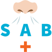
בשלבים אלו, המטפל יבצע הערכה מהירה וטיפול מיידי ברמה בסיסית
במצבים מסכני חיים בלבד.
במצבים מסכני חיים בלבד.

גישה לפצוע
גישה לפצוע
מעבר לכתוב בסכמה, על החובש להבין שהוא מטפל באדם ועל כן עליו לגלות אמפתיה וסמכותיות.
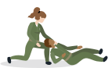
יש לשאול לשם הפצוע.
לדובב את הפצוע -
יכול לעזור לנו להבין מה קרה.
דיבור בצורה סמכותית ורגועה.
יש לעדכן את הפצוע בכל פעולה שאנו עושים.
לדאוג לנוחיות הפצוע - השכבה/הושבה.
Safety
בטיחות
בשלב ה-S נדאג לביטחון המטפל והמטופל,
נתרשם מהזירה וממנגנון הפציעה,
נעצור דימומים פורצים באופן מיידי
ונעביר דיווח ראשוני.
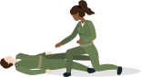
נתרשם מהזירה וממנגנון הפציעה,
נעצור דימומים פורצים באופן מיידי
ונעביר דיווח ראשוני.
חלק ראשון -
ביטחון המטופל והמטפל
ביטחון המטופל והמטפל
חלק ראשון -
ביטחון המטופל והמטפל
לפני כל טיפול רפואי יש לשים לב
לביטחון האישי שלך -
השב באש במידת הצורך.
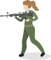
לביטחון האישי שלך -
השב באש במידת הצורך.
טיפול במקום מאובטח = העברת הפצוע והצוות לאזור בטוח.
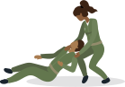
נצירת הנשק = ובמידה והפצוע לא יכול להלחם, גם נוריד ממנו את הנשק.
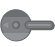
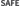
כפפות = עוד לפני ההגעה לזירה.
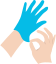
חשוב -
הסתערות על פצוע ללא דאגה לבטחון החובש עלולה להוביל להיווצרות פצועים נוספים.
במידה והפצוע בהכרה ויכול לתפקד, יש להנחותו להשיב באש, לנסות להגיע למחסה או אל שאר הכוח, ולטפל בעצמו - במידה
והוא מסוגל.

חלק שני -
התרשמות מזירת האירוע
וממנגנון הפציעה
התרשמות מזירת האירוע
וממנגנון הפציעה
חלק שני -
התרשמות מזירת האירוע
וממנגנון הפציעה
סיפור המקרה
= מה בדיוק קרה, כמה פצועים וכדומה. ניתן לברר פרטים אלו ע”י קבלת דיווח.
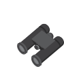
מנגנון הפציעה = התרשמות מהקינמטיקה ומהפציעות
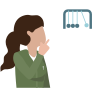
בחינה ויזאלית = מעבר לקבלת מידע מהדיווח הראשוני ומהנוכחים, נרצה לבחון
ויזואלית את זירת האירוע.
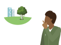
חשוב -
ההתרשמות הראשונית מתבצעת תוך כדי הטיפול והיא איננה שלב בפני עצמה.

חלק שלישי -
עצירת דימום פורץ
עצירת דימום פורץ
חלק שלישי -
עצירת דימום פורץ
דימום פורץ בשלב ה-S ייעצר ע"י CAT/Packing בלבד.
התרשמות מדימום פורץ:
שלולית דם
בגד ספוג דם
שפריצים של דם
איבר קטוע
וכדומה.
חלק רביעי -
דיווח ראשוני
דיווח ראשוני
חלק רביעי -
דיווח ראשוני
לאחר עצירת הדימומים הפורצים יש להעלות דיווח ראשוני על מנת להבטיח הגעה של סיוע אג”מי ורפואי, הכולל פינוי במידת
הצורך.
הדיווח בשלב זה צריך להיות קצר וממוקד
ולהכיל את 5 הממ”ים:
1
מי מדווח - תפקיד ושם המדווח(אות ראשונה של
השם)
2
מקום - איפה אתם נמצאים
3
מתאר - מאוימים/לא מאוימים. מה
קרה
4
מספר פצועים -
חיילים/אזרחים/מחבלים
5
מצב פצועים - דחוף/לא דחוף
פצוע דחוף
יפונה כמה שיותר מהר!
פצוע עם סכנה
לחיים או לאיבר
לחיים או לאיבר
נוהל הדיבור בקשר (נדב”ר)
מילה מקורית
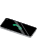
מילת הצופן
חובש
משנה תורן
פצוע
פרח
הרוג
הרדוף
חייל
גפרור
1
כאן משנה תורן כ'
2
אני נמצא בצומת תפוח
3
לאחר פיצוץ מטען
4+5
יש לי 2 פרחים דחופים והרדוף אחד, כולם
גפרורים.
Airway
נתיב אוויר
בעיה בשלב ה-A עלולה לגרום
לפגיעה חמורה בפרק זמן קצר,
לכן זהו השלב ה-2 בסכמה.
שלב זה מחולק להערכה ולטיפול.
תחילה נלמד כיצד להעריך את נתיב האוויר של הפצוע, ולאחר מכן כיצד לסלק הפרשות ולפתוח נ”א במידת הצורך.
שלב זה מחולק להערכה ולטיפול.
תחילה נלמד כיצד להעריך את נתיב האוויר של הפצוע, ולאחר מכן כיצד לסלק הפרשות ולפתוח נ”א במידת הצורך.
חלק ראשון -
בדיקת הכרה
בדיקת הכרה
חלק ראשון -
בדיקת הכרה
על מנת לקבוע את המשך הטיפול בפצוע (ואם קיימת בעיה בנתיב האוויר) נבצע בדיקת הכרה ע”פ שלבי ה- A.V.P.U
Alert - הכרה מלאה
Vocal - מגיב לקול
קריאה בשם המטופל/אדוני אדוני...
Pain - מגיב לכאב
צביטה בשרירי הטרפזים.
Unresponsive - חסר הכרה
חלק שני -
התרשמות מדרכי
האוויר של הנפגע
התרשמות מדרכי
האוויר של הנפגע
חלק שני -
התרשמות מדרכי
האוויר של הנפגע
בשלב זה נעריך את מצב נתיב האוויר של הפצוע.
התבוננות
נסתכל על פני הפצוע ונבדוק אם קיימים סימנים מחשידים :
שינוי צורה, שברים, דימומים, או סימני פגיעות שאיפה (כוויות, פיח, שערות פנים שרופות)
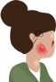
שינוי צורה, שברים, דימומים, או סימני פגיעות שאיפה (כוויות, פיח, שערות פנים שרופות)
נפתח את פה הפצוע
לאחר מכן, נפתח את פה הפצוע כדי לבדוק האם לפצוע יש הפרשות, או האם קיימים סימנים לפגיעות שאיפה במתאר מתאים.
קול הפצוע
יש להתרשם מקולו של הפצוע.
צרידות וצפצופים - בסיפור מקרה של שריפה יכולים להחשיד על התפתחות בצקות בדרכי האוויר. לכן, פצוע זה יהיה דחוף
כמו כן, חרחורים יוכלו להעיד על חסימת נתיב אוויר ע”י הלשון/ הפרשות.
צרידות וצפצופים - בסיפור מקרה של שריפה יכולים להחשיד על התפתחות בצקות בדרכי האוויר. לכן, פצוע זה יהיה דחוף
כמו כן, חרחורים יוכלו להעיד על חסימת נתיב אוויר ע”י הלשון/ הפרשות.
במידה ולפצוע קיימת נעילת לסתות ולא ניתן לפתוח את הפה, לא ננסה לפתוח בכוח!
חלק שלישי -
סילוק הפרשות
סילוק הפרשות
חלק שלישי -
סילוק הפרשות
במידה והתרשמנו מהפרשות בפה הפצוע,
יש לסלקן באופן מיידי ע”י הטיית הראש הצידה בזהירות. ההפרשות ישפכו מפה הפצוע פסיבית,
אסור לדחוף לפה דיסקית או
אצבעות.
אם ההפרשות הן כתוצאה מדימום מאיזור הלסת, אפשר להושיב את הפצוע במידה והוא יכול, על מנת שיוכל לנשם בצורה באפקטיבית.
אם ההפרשות הן כתוצאה מדימום מאיזור הלסת, אפשר להושיב את הפצוע במידה והוא יכול, על מנת שיוכל לנשם בצורה באפקטיבית.
במידה ויש חשד לפגיעת עמש”צ יש להטות את כל גוף המטופל הצידה.
חלק רביעי -
הסרת קסדה
הסרת קסדה
חלק רביעי -
הסרת קסדה
הקסדה מפריעה לנו לטפל בפצוע בצורה טובה, ולכן נסיר אותה לכלל הפצועים.
במהלך הורדת הקסדה נחזיק בעורף של הפצוע כדי למנוע טלטול מיותר של הראש.
במהלך הורדת הקסדה נחזיק בעורף של הפצוע כדי למנוע טלטול מיותר של הראש.
חלק חמישי -
פתיחת נתיב אוויר
פתיחת נתיב אוויר
חלק חמישי -
פתיחת נתיב אוויר
הסכנה העיקרית לפצוע חסר הכרה הינה צניחת בסיס הלשון!
לפצוע מחוסר הכרה, יש לפתוח נתיב אוויר על מנת למנוע מצב זה.
הלשון מחוברת ללסת, ולכן צריך להרים את הלסת, ולהרחיק את הלשון מן הקנה.
ישנן 2 אפשרויות לפתיחת נתיב אוויר:
לפצוע מחוסר הכרה, יש לפתוח נתיב אוויר על מנת למנוע מצב זה.
הלשון מחוברת ללסת, ולכן צריך להרים את הלסת, ולהרחיק את הלשון מן הקנה.
ישנן 2 אפשרויות לפתיחת נתיב אוויר:
Head Tilt -
הטיית הראש לאחור
כאשר חובש מטפל לבד בפצוע עליו לבצע הטיית ראש לאחור במידת הצורך. לא מבצעים שיטה זו אם יש חשש לפגיעה בעמוד
השדרה
הצווארי.
Jaw Thrust -
דחיקת לסת
לא נבצע שיטה זאת כאשר יש פצוע חסר הכרה - לא מגיב לכאב.
יבוצע רק אצל פצוע עם חשד לפגיעת עמש”צ.
מאפשר דחיקה של הלסת תוך שמירה על עמוד השדרה הצווארי.
כאשר החובש מטפל יחד עם מח"צים(מצילי חיים) - יש לבצע JT ע"י חובש רק לאחר שלוש הפעולות הבאות:
עצירת דימומים פורצים, דיווח והכנה לפינוי.
עצירת דימומים פורצים, דיווח והכנה לפינוי.
במידה והחובש מטפל יחד עם חובש נוסף או מט"ב(מטפל בכיר) יש לבצע JT בשלב ה-A.
המטרה בדחיקת הלסת היא הרמת הלשון, ולא פתיחת הפה.
את שלב זה נבצע רק אצל פצועים שאינם מגיבים לכאב.
את שלב זה נבצע רק אצל פצועים שאינם מגיבים לכאב.
Air Way
חלק שישי -
Air Way
ה-A.W יוחדר לפצוע שאינו מגיב לכאב בלבד.
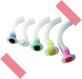
יתרונות:
מפחית את הסיכוי לחנק מהלשון.
משפר את איכות ההנשמה.
דגשים:
A.W שנפלט (שלא כתוצאה מהפרשות) לא יוחזר בשל קיום רפלקסים.
A.W יוחדר לפצוע בלי לדחוף את הלשון.
A.W לא שומר על נתיב האוויר פתוח.
חלק שביעי -
התרשמות מאזור הצוואר
התרשמות מאזור הצוואר
חלק שביעי -
התרשמות מאזור הצוואר
יש לסרוק באופן מלא את הצוואר ולוודא שאין שום פציעה נסתרת או המטומות.
אם יש המטומה צריך לסמן אותה ולאחר מכן לנטר אחר הפציעה - לוודא שהיא לא עוברת את גבולות הסימון.
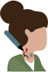
נרצה להתרשם מסימני חזה אוויר בלחץ: שימוש בשרירי עזר יעידו לנו על מצוקה נשימתית, היסט קנה (מצב נדיר) שיעיד לנו על חזה אוויר בלחץ.
Breathing
נשימה
בשלב ה-B, נעריך האם יש פגיעה בבית החזה של הפצוע ונתרשם מאיכות וכמות הנשימה.
חלק ראשון -
התרשמות מבית החזה -
סריקה
התרשמות מבית החזה -
סריקה
חלק ראשון -
התרשמות מבית החזה -
סריקה
נחשוף
את בית החזה ונסרוק אותו ע”י הסתכלות ומישוש.
נחפש
חורי ירי, שברים, המטומות, שינויי צורה, דימומים, חתכים וכדומה.
נתרשם
האם קיימים סימנים למצוקה נשימתית - נשימה שטחית, מאומצת, לא סדירה, מלווה בכאב.
נבדוק
האם ישנה עלייה בלתי שווה של בית החזה.
פציעות חזה = פציעות מקו הטבור ועד לבסיס הצוואר, הן מלפנים והן מאחור.
נרצה להסתמך בעיקר על מדדים כמותיים ולא על איכותיים - מדדים אלו אמינים יותר.
אין לאטום חורי ירי בבית החזה! אטימת חורי ירי יכולה לגרום לעליית הלחץ בבית החזה מה שיגרום
ללחץ על הלב, להלם, ואף למוות.
חלק שני -
קצב הנשימה
קצב הנשימה
חלק שני -
קצב הנשימה
בדיקת הנשימה תתבצע ע”י הנחת יד אחת על בית החזה, תוך כדי קירוב האוזן של המטפל אל הפצוע והסתכלות על בית
החזה.
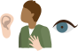
הבדיקה תתבצע למשך 30 שניות ונכפיל את התוצאה פי 2.
נשימה תקינה = 8-20 נשימות בדקה.
נשימה תקינה בטראומה = 12-20 נשימות בדקה.
למשל: אם מדדתם למטופל 7 נשימות ב-30 שניות, אלו יהיו 14 נשימות בדקה ובטווח התקין.
חלק שלישי -
ניטור רוויון חמצן
כמותי
ניטור רוויון חמצן
כמותי
חלק שלישי -
ניטור רוויון חמצן
כמותי
במידה ויש לנו את הציוד הנדרש,
נחבר פאלס אוקסימטר לפצוע - מכשיר אשר יסייע לנו בניטור אחוזי החמצן בדם. אחוז חמצן תקין יהיה 95%-100%.
על המכשיר נלמד בשיעור “פאלס אוקסימטר”
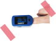
חלק רביעי -
מתן חמצן
מתן חמצן
חלק רביעי -
מתן חמצן
חלק מהציוד שמגיע עם המט"ב הוא מיכל חמצן. לכן במידה וזמין לנו בשטח נשאף לתת למטופל חמצן.
כל פצוע שהיתהלו בעיה בשלב הA/B - התוויה
למתן חמצן.
למתן חמצן.
ניתן LPM 10 אלא אם כן ניתנה הוראה אחרת ממטפל בכיר.
לא נכניס חמצן למתארים מסוכנים.
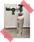
עדכון המט"ב
עדכון המט"ב
בכל טיפול בפצוע, נשאף לעדכן את המטפל הבכיר בכל ממצא - גם כאשר מטפלים עם מח”צים וגם בצוות רפואי.
נדווח למטפל בכיר על ההתרשמות מזירת האירוע, הפציעות, הפעולות שנעשו והמדדים שנלקחו. כמו כן, נדווח על כל שינוי
במצב הפצוע.
במהלך שלב הB המט"ב יבצע האזנה דו-צדדית באמצעות סטטוסקופ שיעזור לו לזהות פגיעות חזה.
אודות
ראש מדור טי"ל: רס"ן מיגל לויתן
ניהול הפרויקט: רב"ט גל גנסין
אפיון תוצר הדרכתי: סמל נועה עובדיה
וטור' דרור אברמסון
וטור' דרור אברמסון
תכנות: סמל נועה עובדיה
עיצוב: טור' מייה ליבנה
מומחה תוכן בה"ד 10: סרן רוני ארמון
גירסה: 2020 1.0
